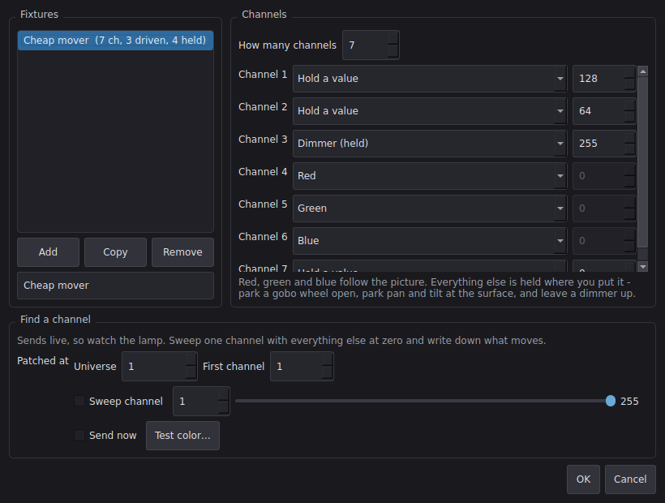

Lights that follow the picture
Rectangles of the canvas are averaged to a color every frame and sent to a WLED controller over the network, so LED strip, uplights or a backdrop wash change with the projection instead of being cued separately.
Zones are dragged over a live picture of the output, each one filled with the color it is sending, so what a lamp will do is visible before it is aimed. What they follow is the projector itself: they go out with a blackout and cross-fade with a dissolve.
Off by default. Every packet carries a two-second hold time, so a crash or a dropped network hands the rig back to its own programming rather than freezing it on the last frame that arrived.


A scene can also tell the lamps what to do: follow the picture, hold a color, or stay dark, each with its own level. The cue arrives over that scene's own transition, so a three second fade moves the lights over three seconds too.
Cues travel in the scene file and zones stay with the machine - the same split a lighting desk makes between the cue and the patch - so a show plays in a venue whose rig is hung differently without a color being re-picked.
DMX fixtures work the same way: point a zone at a universe and a start channel instead of a run of LEDs, over Art-Net or sACN. Two generic RGB par profiles are built in - including the four-channel kind whose first channel is a dimmer, which is the one that catches people out.
For the lamps that arrive with a mode dial and no paperwork, the fixture builder finds out: sweep one channel with every other at zero, watch what moves, write it down. Red, green and blue follow the picture; every other channel is held where you park it.

WLED and DMX
Zones go out as pixels to a WLED controller, or as fixtures over Art-Net, sACN or an Enttec-compatible USB adapter, in one rig and on the same tick. A fixture builder describes anything not already known, including a channel sweep for lamps that arrive with no manual.
Where the rig lives
With the computer, not the show file - the zones describe where the lamps physically are, as a share of the canvas, so a rig survives a change of projector.
Cues live in the scene
A scene can tell the lamps to follow, hold a color or stay dark, with its own intensity, and the cue arrives over that scene's transition. Patch with the machine, cue with the show - so a show plays anywhere without a color being re-picked.